Labeled figures
Lecture: Exam 3 · Lab practical · Labeled figures · Figure flashcards. Each figure is labeled, with its memory hooks (acronyms and mnemonics) right under it. The lecture-slide figures come from your slides, and the lab figures come from your homework with every arrow labeled in a matching color. Look these over, then try the Figure flashcards (study view or quiz).
Jump to: SkullVertebrae, sacrum & coccyxShoulder, arm, forearm & handPelvis, leg & footSkin layers & bone tissueTissue slides (histology)Skin layers & nailBone & bone tissue (homework figures)Scapula (homework figure)Body regions, cavities & membranesMicroscope: labeled diagram (CC0)Microscope parts (homework photos)Cell organelles
Skull
Figure 7-2 Cranial and Facial Subdivisio
Axial Skeleton slides (8A), slide 18

Labels: Zygomatic bone, Lacrimal bone, Sphenoid, Temporal bone, Parietal bone, Frontal bone, Nasal bone, Maxilla, Occipital bone, Vomer, Ethmoid, Mandible
🧠 Facial bones, top to bottomNew Lads Volunteer Zebra Males MunchingNasal bone, Lacrimal bone, Vomer, Zygomatic bone, Maxilla, Mandible
🧠 Cranial bonesSilly Elephants Fly Past Tall OaksSphenoid, Ethmoid, Frontal, Parietal, Temporal, Occipital
🧠 Cranial bones (8)PEST OF 6Parietal, Ethmoid, Sphenoid, Temporal, Occipital, Frontal. Parietal and temporal come in pairs.
🧠 Facial bones (14)VCNMMPZLVirgil Can Not Make My Pet Zebra Laugh: Vomer, Conchae, Nasal, Maxilla, Mandible, Palatine, Zygomatic, Lacrimal.
Figure 7-3a The Adult Skull.
Axial Skeleton slides (8A), slide 21

Labels: Occipital condyle, Mastoid process, Sagittal suture, Parietal bone (left), Parietal bone (right), Lambdoid suture, Mandible, Styloid process, Squamous suture, Temporal bone, External occipital protuberance, Occipital bone
🧠 Labels down the right sideSleepy Llamas Sip Tea Making Sweet Orange EggnogSagittal suture, Lambdoid suture, Squamous suture, Temporal bone, Mastoid process, Styloid process, Occipital condyle, External occipital protuberance
🧠 Bones on the picturePandas Obey MomsParietal bone, Occipital bone, Mandible
🧠 Cranial bones (8)PEST OF 6Parietal, Ethmoid, Sphenoid, Temporal, Occipital, Frontal. Parietal and temporal come in pairs.
🧠 Facial bones (14)VCNMMPZLVirgil Can Not Make My Pet Zebra Laugh: Vomer, Conchae, Nasal, Maxilla, Mandible, Palatine, Zygomatic, Lacrimal.
🧠 Skull suturesCORONAL = CROWN · SAGITTAL = ARROW · LAMBDOID = ΛCoronal ear to ear, sagittal down the middle, lambdoid at the back. Squamous = scaly, at the side.
🧠 Mastoid and styloidMASTOID = MASS · STYLOID = STYLUSBoth on the temporal bone: bump behind the ear, thin pen point.
Temporal bone, lateral view
Axial Skeleton slides (8A), slide 31

Labels: Zygomatic arch, Mandible, External acoustic meatus, Temporal bone, Parietal bone, Occipital bone, Mastoid process, zygomatic bone, Lambdoid suture, Squamous suture, Frontal bone, Coronal suture
🧠 Sutures, top to bottomCats Sing LoudlyCoronal suture, Squamous suture, Lambdoid suture
🧠 Skull bonesPink Frogs Tickle Old Zebras MoodilyParietal bone, Frontal bone, Temporal bone, Occipital bone, Zygomatic bone, Mandible
🧠 Ear region, top to bottomElephants Munch ZucchiniExternal acoustic meatus, Mastoid process, Zygomatic arch
🧠 Cranial bones (8)PEST OF 6Parietal, Ethmoid, Sphenoid, Temporal, Occipital, Frontal. Parietal and temporal come in pairs.
🧠 Facial bones (14)VCNMMPZLVirgil Can Not Make My Pet Zebra Laugh: Vomer, Conchae, Nasal, Maxilla, Mandible, Palatine, Zygomatic, Lacrimal.
🧠 Skull suturesCORONAL = CROWN · SAGITTAL = ARROW · LAMBDOID = ΛCoronal ear to ear, sagittal down the middle, lambdoid at the back. Squamous = scaly, at the side.
🧠 Mastoid and styloidMASTOID = MASS · STYLOID = STYLUSBoth on the temporal bone: bump behind the ear, thin pen point.
Lateral view of the right Temporal bone
Axial Skeleton slides (8A), slide 32

Labels: Zygomatic process, Mastoid process, External acoustic meatus, Styloid process, Squamous part, Mandibular fossa
🧠 Temporal bone, top to bottomSilly Monkeys Zip Every Stinky MileSquamous part, Mandibular fossa, Zygomatic process, External acoustic meatus, Styloid process, Mastoid process
🧠 Facial bones (14)VCNMMPZLVirgil Can Not Make My Pet Zebra Laugh: Vomer, Conchae, Nasal, Maxilla, Mandible, Palatine, Zygomatic, Lacrimal.
🧠 Mastoid and styloidMASTOID = MASS · STYLOID = STYLUSBoth on the temporal bone: bump behind the ear, thin pen point.
Figure 7-9a The Ethmoid.
Axial Skeleton slides (8A), slide 44

Labels: Olfactory foramina, Superior surface, Crista galli, Cribriform plate, Perpendicular plate
🧠 Ethmoid, top to bottomOrange Cats Climb PianosOlfactory foramina, Cribriform plate, Crista galli, Perpendicular plate
🧠 Cranial bones (8)PEST OF 6Parietal, Ethmoid, Sphenoid, Temporal, Occipital, Frontal. Parietal and temporal come in pairs.
Orbitalrim
Axial Skeleton slides (8A), slide 50

Labels: Alveolar process, Orbital rim, Zygomatic process, Infraorbital foramen
🧠 Maxilla, top to bottomOrange Iguanas Always ZoomOrbital rim, Infraorbital foramen, Alveolar process, Zygomatic process
🧠 Facial bones (14)VCNMMPZLVirgil Can Not Make My Pet Zebra Laugh: Vomer, Conchae, Nasal, Maxilla, Mandible, Palatine, Zygomatic, Lacrimal.
Inferior view
Axial Skeleton slides (8A), slide 52

Labels: Foramen magnum, Temporal Bone, Occipital bone, Sphenoid, Zygomatic bone, Zygomatic arch, External acoustic meatus, Occipital condyle, Palatine bone
🧠 Left labels, top to bottomPurple Zebras Zoom Over OceansPalatine bone, Zygomatic bone, Zygomatic arch, Occipital condyle, Occipital bone
🧠 Right labels, top to bottomSneaky Tigers Eat Odd FoodSphenoid, Temporal bone, External acoustic meatus, Occipital bone, Foramen magnum
🧠 Cranial bones (8)PEST OF 6Parietal, Ethmoid, Sphenoid, Temporal, Occipital, Frontal. Parietal and temporal come in pairs.
🧠 Facial bones (14)VCNMMPZLVirgil Can Not Make My Pet Zebra Laugh: Vomer, Conchae, Nasal, Maxilla, Mandible, Palatine, Zygomatic, Lacrimal.
🧠 Foramen magnumMAGNUM = BIG HOLESpinal cord goes through, base of the occipital bone.
Figure 7-3c The Adult Skull.
Axial Skeleton slides (8A), slide 54

Labels: Occipital bone, Parietal bone, zygomatic bone, Zygomatic arch, Mandible, Nasal bone, Frontal bone, Lambdoid suture, Temporal bone, Sphenoid, Coronal suture, External acoustic meatus, Mastoid process, Squamous suture
🧠 Left labels, top to bottomCranky Sheep Lick Eight MangosCoronal suture, Squamous suture, Lambdoid suture, External acoustic meatus, Mastoid process
🧠 Right labels, top to bottomSad Nuns Lick Mouldy Zebras MildlySphenoid, Nasal bone, Lacrimal bone, Maxilla, Zygomatic bone, Mandible
🧠 Cranial bonesPenguins Fear Tiny OwlsParietal bone, Frontal bone, Temporal bone, Occipital bone
🧠 Cranial bones (8)PEST OF 6Parietal, Ethmoid, Sphenoid, Temporal, Occipital, Frontal. Parietal and temporal come in pairs.
🧠 Facial bones (14)VCNMMPZLVirgil Can Not Make My Pet Zebra Laugh: Vomer, Conchae, Nasal, Maxilla, Mandible, Palatine, Zygomatic, Lacrimal.
🧠 Skull suturesCORONAL = CROWN · SAGITTAL = ARROW · LAMBDOID = ΛCoronal ear to ear, sagittal down the middle, lambdoid at the back. Squamous = scaly, at the side.
🧠 Mastoid and styloidMASTOID = MASS · STYLOID = STYLUSBoth on the temporal bone: bump behind the ear, thin pen point.
The Facial Bones, bleached skull image
Axial Skeleton slides (8A), slide 56

Labels: Zygomatic bone, Perpendicular plate of ethmoid, Nasal bone, Maxilla, Vomer, Bony nasal septum
🧠 Facial bones, top to bottomNervous Zebras Munch Pink VegetablesNasal, Zygomatic, Maxilla, Perpendicular plate, Vomer
🧠 Cranial bones (8)PEST OF 6Parietal, Ethmoid, Sphenoid, Temporal, Occipital, Frontal. Parietal and temporal come in pairs.
🧠 Facial bones (14)VCNMMPZLVirgil Can Not Make My Pet Zebra Laugh: Vomer, Conchae, Nasal, Maxilla, Mandible, Palatine, Zygomatic, Lacrimal.
Inferior view
Axial Skeleton slides (8A), slide 57

Labels: Zygomatic bone, Occipital bone, Temporal Bone, Palatine bone, Maxilla, Occipital condyle, Foramen magnum, External acoustic meatus, Sphenoid
🧠 Left side, top to bottomMice Play Zany Octopus OlympicsMaxilla, Palatine, Zygomatic, Occipital condyle, Occipital bone
🧠 Right side, top to bottomSilly Turtles Eat Odd FishSphenoid, Temporal, External acoustic meatus, Occipital bone, Foramen magnum
🧠 Cranial bones (8)PEST OF 6Parietal, Ethmoid, Sphenoid, Temporal, Occipital, Frontal. Parietal and temporal come in pairs.
🧠 Facial bones (14)VCNMMPZLVirgil Can Not Make My Pet Zebra Laugh: Vomer, Conchae, Nasal, Maxilla, Mandible, Palatine, Zygomatic, Lacrimal.
🧠 Foramen magnumMAGNUM = BIG HOLESpinal cord goes through, base of the occipital bone.
Frontal bone
Axial Skeleton slides (8A), slide 58

Labels: Nasal bone, Frontal bone, Middle, Palatine bone (bony palate), Superior, Maxilla (bony palate), Sphenoidal sinuses, Frontal sinuses, Ethmoid, Nasal conchae of ethmoid, Sphenoid, Inferior nasal concha
🧠 Left labels, top to bottomFrogs Fry Eggs Near Purple MushroomsFrontal bone, Frontal sinuses, Ethmoid, Nasal bone, Palatine bone, Maxilla
🧠 Right labels, top to bottomSnakes Sing InsanelySphenoidal sinuses, Sphenoid, Inferior nasal concha
🧠 Cranial bones (8)PEST OF 6Parietal, Ethmoid, Sphenoid, Temporal, Occipital, Frontal. Parietal and temporal come in pairs.
🧠 Facial bones (14)VCNMMPZLVirgil Can Not Make My Pet Zebra Laugh: Vomer, Conchae, Nasal, Maxilla, Mandible, Palatine, Zygomatic, Lacrimal.
🧠 PhalangesP · M · DProximal, Middle, Distal. Thumb and big toe skip the middle.
Figure 7-12a The Mandible.
Axial Skeleton slides (8A), slide 61

Labels: Angle, Condylar process, Coronoid process, Mandibular notch, Mental foramen, Teeth, Mental protuberance, Ramus
🧠 Mandible, top to bottomCows Tickle My Chin, Raising Mad Monkeys AngrilyCoronoid process, Teeth, Mandibular notch, Condylar process, Ramus, Mental protuberance, Mental foramen, Angle
🧠 Elbow landmarksOLECRANON = POINT · CORONOID = BEAK · TROCHLEA = PULLEYCoronoid means crow's beak.
Figure 7-15a The Nasal Complex.
Axial Skeleton slides (8A), slide 74

Labels: Maxillary sinus, Frontal sinus, Ethmoid air cells, Sphenoidal sinus
🧠 Paranasal sinuses, top to bottomFat Elephants Sing MagnificentlyFrontal sinus, Ethmoid air cells, Sphenoidal sinus, Maxillary sinus
🧠 Cranial bones (8)PEST OF 6Parietal, Ethmoid, Sphenoid, Temporal, Occipital, Frontal. Parietal and temporal come in pairs.
🧠 Facial bones (14)VCNMMPZLVirgil Can Not Make My Pet Zebra Laugh: Vomer, Conchae, Nasal, Maxilla, Mandible, Palatine, Zygomatic, Lacrimal.
Figure 7-3b The Adult Skull.
Axial Skeleton slides (8A), slide 77

Labels: Parietal bone (left), Frontal bone, Zygomatic Bone, Nasal bones, Coronal suture, Occipital bone, Lambdoid suture, Parietal bone (right), Sagittal suture
🧠 Bones, top to bottomOwls Pinch Fat Zebra NosesOccipital bone, Parietal bone, Frontal bone, Zygomatic bone, Nasal bones
🧠 Sutures, top to bottomLazy Seals CheerLambdoid suture, Sagittal suture, Coronal suture
🧠 Cranial bones (8)PEST OF 6Parietal, Ethmoid, Sphenoid, Temporal, Occipital, Frontal. Parietal and temporal come in pairs.
🧠 Facial bones (14)VCNMMPZLVirgil Can Not Make My Pet Zebra Laugh: Vomer, Conchae, Nasal, Maxilla, Mandible, Palatine, Zygomatic, Lacrimal.
🧠 Skull suturesCORONAL = CROWN · SAGITTAL = ARROW · LAMBDOID = ΛCoronal ear to ear, sagittal down the middle, lambdoid at the back. Squamous = scaly, at the side.
Figure 7-3c The Adult Skull.
Axial Skeleton slides (8A), slide 78

Labels: Mastoid process, Occipital bone, Sphenoid, Coronal suture, Nasal bone, Frontal bone, Parietal bone, Zygomatic arch, Squamous suture, Mandible, External acoustic meatus, Temporal bone, Lambdoid suture, zygomatic bone
🧠 Bones, top to bottomPigs Fly Through OceansParietal bone, Frontal bone, Temporal bone, Occipital bone
🧠 Sutures, top to bottom (left)Cats Squeak LoudlyCoronal suture, Squamous suture, Lambdoid suture
🧠 Right labels, top to bottomSad Newts Lick Mild Zesty MudSphenoid, Nasal bone, Lacrimal bone, Maxilla, Zygomatic bone, Mental protuberance
🧠 Ear region, top to bottomEels Munch MangoesExternal acoustic meatus, Mastoid process, Mandible
🧠 Cranial bones (8)PEST OF 6Parietal, Ethmoid, Sphenoid, Temporal, Occipital, Frontal. Parietal and temporal come in pairs.
🧠 Facial bones (14)VCNMMPZLVirgil Can Not Make My Pet Zebra Laugh: Vomer, Conchae, Nasal, Maxilla, Mandible, Palatine, Zygomatic, Lacrimal.
🧠 Skull suturesCORONAL = CROWN · SAGITTAL = ARROW · LAMBDOID = ΛCoronal ear to ear, sagittal down the middle, lambdoid at the back. Squamous = scaly, at the side.
🧠 Mastoid and styloidMASTOID = MASS · STYLOID = STYLUSBoth on the temporal bone: bump behind the ear, thin pen point.
Coronal suture
Axial Skeleton slides (8A), slide 80

Labels: Frontal suture, Sagittal suture, Anterior fontanelle, Posterior fontanelle, Parietal bone, Frontal bone, Coronal suture, Occipital bone, Lambdoid suture
🧠 Fontanelles and suturesAngry Pandas Chase Fat Seals LoudlyAnterior fontanelle, Posterior fontanelle, Coronal suture, Frontal suture, Sagittal suture, Lambdoid suture
🧠 Bones, top to bottomPink Frogs ObeyParietal bone, Frontal bone, Occipital bone
🧠 Cranial bones (8)PEST OF 6Parietal, Ethmoid, Sphenoid, Temporal, Occipital, Frontal. Parietal and temporal come in pairs.
🧠 Skull suturesCORONAL = CROWN · SAGITTAL = ARROW · LAMBDOID = ΛCoronal ear to ear, sagittal down the middle, lambdoid at the back. Squamous = scaly, at the side.
Vertebrae, sacrum & coccyx
Skull
Axial Skeleton slides (8A), slide 7

Labels: Coccyx, Thoracic vertebrae, Costal cartilages, Sternum, Ribs, Cervical vertebrae, Sacrum, Lumbar vertebrae
🧠 Anterior view, top to bottomSneaky Sharks Ride Crabs, Lazily Sipping ColaSkull, Sternum, Ribs, Costal cartilages, Lumbar vertebrae, Sacrum, Coccyx
🧠 Posterior view, top to bottomSilly Cats Run Through Large Sandy CavesSkull, Cervical vertebrae, Ribs, Thoracic vertebrae, Lumbar vertebrae, Sacrum, Coccyx
🧠 Vertebra counts7 · 12 · 5Breakfast at 7, lunch at 12, dinner at 5 = cervical, thoracic, lumbar. Sacrum 5 fused, coccyx about 4.
🧠 RibsTRUE 1–7 · FALSE 8–12 · FLOAT 11–12Costal cartilage joins ribs to the sternum.
Figure 7-17 The Vertebral Column.
Axial Skeleton slides (8A), slide 94

Labels: Sacral, Coccygeal, Vertebral Regions, TCervical curve, Lumbar curve
🧠 Vertebral regions, top to bottomCats Throw Large Sticky CakesCervical, Thoracic, Lumbar, Sacral, Coccygeal
🧠 Spinal curves, top to bottomCows Tickle Little SheepCervical curve, Thoracic curve, Lumbar curve, Sacral curve
🧠 Vertebra counts7 · 12 · 5Breakfast at 7, lunch at 12, dinner at 5 = cervical, thoracic, lumbar. Sacrum 5 fused, coccyx about 4.
🧠 Sacrum landmarksALA = WING · PROMONTORY = CLIFF · HIATUS = GAPMedian sacral crest is the bumpy ridge down the back.
🧠 Back regionsOCCIPITAL = BACK OF HEAD · VERTEBRAL = SPINE · LUMBAR = LOW BACK · SACRAL = BASEAuricular = ear. Perineal = between the legs.
Figure 7-18d Vertebral Anatomy.
Axial Skeleton slides (8A), slide 98

Labels: Inferior articular process, Lamina of vertebral arch, Superior articular facets, Spinous process, Intervertebral disc, Transverse process, Superior articular process, Vertebral body
🧠 Back view, top to bottomSloppy Sailors Lick Slimy Iguanas Trading Vanilla IceSuperior articular facets, Superior articular process, Lamina, Spinous process, Intervertebral disc, Transverse process, Vertebral body, Inferior articular process
🧠 Vertebra counts7 · 12 · 5Breakfast at 7, lunch at 12, dinner at 5 = cervical, thoracic, lumbar. Sacrum 5 fused, coccyx about 4.
🧠 Vertebra partsSPINOUS = SPINE BUMP · TRANSVERSE = WINGS · BODY = BIGPedicle = foot-like stalk, lamina = flat layer.
Figure 7-18e Vertebral Anatomy.
Axial Skeleton slides (8A), slide 99

Labels: Intervertebral foramen, Spinous process, Transverse process, Vertebral body, Superior articular facets, Lamina of vertebral arch, Intervertebral disc, Inferior articular facet
🧠 Side view, top to bottomSly Lions Instantly Ignore Silly Tigers Visiting IndiaSuperior articular facets, Lamina, Intervertebral foramen, Intervertebral disc, Spinous process, Transverse process, Vertebral body, Inferior articular facet
🧠 Vertebra counts7 · 12 · 5Breakfast at 7, lunch at 12, dinner at 5 = cervical, thoracic, lumbar. Sacrum 5 fused, coccyx about 4.
🧠 Vertebra partsSPINOUS = SPINE BUMP · TRANSVERSE = WINGS · BODY = BIGPedicle = foot-like stalk, lamina = flat layer.
Figure 7-19b The Cervical Vertebrae.
Axial Skeleton slides (8A), slide 105

Labels: Pedicle, Transverse foramen, Spinous process, BIFID, Lamina, Vertebral foramen, Vertebral body
🧠 Cervical vertebra, top to bottomSilly Lizards Vacuum Pink Vans TodaySpinous process, Lamina, Vertebral foramen, Pedicle, Vertebral body, Transverse foramen
🧠 Vertebra counts7 · 12 · 5Breakfast at 7, lunch at 12, dinner at 5 = cervical, thoracic, lumbar. Sacrum 5 fused, coccyx about 4.
🧠 Vertebra partsSPINOUS = SPINE BUMP · TRANSVERSE = WINGS · BODY = BIGPedicle = foot-like stalk, lamina = flat layer.
🧠 Cervical vertebraHOLES IN WINGS + FORKED TIPTransverse foramina and a bifid spinous process: only cervical.
Figure 7-19d The Cervical Vertebrae.
Axial Skeleton slides (8A), slide 107

Labels: Dens of axis, Axis (C2), Transverse ligament, Anterior arch, Atlas (C1)
🧠 Atlas and axis, top to bottomDogs Always Tickle Angry AliensDens of axis, Anterior arch, Transverse ligament, Atlas, Axis
🧠 Atlas and axisATLAS = YES · AXIS = NOAtlas nods yes, axis pivots to shake no. The dens is the peg.
Figure 7-20a The Thoracic Vertebrae.
Axial Skeleton slides (8A), slide 110

Labels: Thoracic vertebrae (T1–T12), T10, T12, T11, Intervertebral foramen
🧠 Vertebra counts7 · 12 · 5Breakfast at 7, lunch at 12, dinner at 5 = cervical, thoracic, lumbar. Sacrum 5 fused, coccyx about 4.
Figure 7-20b The Thoracic Vertebrae.
Axial Skeleton slides (8A), slide 111

Labels: Superior articular facet, Transverse process, Vertebral body, Lamina, Vertebral foramen, Spinous process, Transverse costal facet, Superior costal facet
🧠 Thoracic vertebra, top to bottomSleepy Tigers Lick Tasty Snow, Vaping Sour VinegarSpinous process, Transverse process, Lamina, Transverse costal facet, Superior articular facet, Vertebral foramen, Superior costal facet, Vertebral body
🧠 Vertebra counts7 · 12 · 5Breakfast at 7, lunch at 12, dinner at 5 = cervical, thoracic, lumbar. Sacrum 5 fused, coccyx about 4.
🧠 Vertebra partsSPINOUS = SPINE BUMP · TRANSVERSE = WINGS · BODY = BIGPedicle = foot-like stalk, lamina = flat layer.
🧠 RibsTRUE 1–7 · FALSE 8–12 · FLOAT 11–12Costal cartilage joins ribs to the sternum.
Typical Lumbar vertebra
Axial Skeleton slides (8A), slide 116

Labels: Transverse process, Spinous process, Vertebral body, Lamina, Pedicle, Vertebral foramen
🧠 Lumbar vertebra, top to bottomSeven Lazy Turtles Vomit Purple VeggiesSpinous process, Lamina, Transverse process, Vertebral foramen, Pedicle, Vertebral body
🧠 Vertebra counts7 · 12 · 5Breakfast at 7, lunch at 12, dinner at 5 = cervical, thoracic, lumbar. Sacrum 5 fused, coccyx about 4.
🧠 Vertebra partsSPINOUS = SPINE BUMP · TRANSVERSE = WINGS · BODY = BIGPedicle = foot-like stalk, lamina = flat layer.
Figure 7-21b The Lumbar Vertebrae.
Axial Skeleton slides (8A), slide 117

Labels: Spinous process, Inferior articular process, Pedicle, Transverse process, Inferior articular facet, Vertebral body, Superior articular process
🧠 Side view, top to bottomSmelly Pigs Toss Vegan Sandwiches In IgloosSuperior articular process, Pedicle, Transverse process, Vertebral body, Spinous process, Inferior articular process, Inferior articular facet
🧠 Vertebra counts7 · 12 · 5Breakfast at 7, lunch at 12, dinner at 5 = cervical, thoracic, lumbar. Sacrum 5 fused, coccyx about 4.
🧠 Vertebra partsSPINOUS = SPINE BUMP · TRANSVERSE = WINGS · BODY = BIGPedicle = foot-like stalk, lamina = flat layer.
Figure 7-22a The Sacrum and Coccyx.
Axial Skeleton slides (8A), slide 118

Labels: Coccyx, Median sacral crest, Sacral hiatus, Entrance to sacral canal
🧠 Sacrum, top to bottomElephants Munch Seven CarrotsEntrance to sacral canal, Median sacral crest, Sacral hiatus, Coccyx
🧠 Vertebra counts7 · 12 · 5Breakfast at 7, lunch at 12, dinner at 5 = cervical, thoracic, lumbar. Sacrum 5 fused, coccyx about 4.
🧠 Sacrum landmarksALA = WING · PROMONTORY = CLIFF · HIATUS = GAPMedian sacral crest is the bumpy ridge down the back.
The Sacrum and Coccyx.
Axial Skeleton slides (8A), slide 120

Labels: Sacral promontory, Ala, Transverse lines, Sacral foramina, Coccyx
🧠 Sacrum landmarks, top to bottomSleepy Aliens Squish Tiny CatsSacral promontory, Ala, Sacral foramina, Transverse lines, Coccyx
🧠 Vertebra counts7 · 12 · 5Breakfast at 7, lunch at 12, dinner at 5 = cervical, thoracic, lumbar. Sacrum 5 fused, coccyx about 4.
🧠 Sacrum landmarksALA = WING · PROMONTORY = CLIFF · HIATUS = GAPMedian sacral crest is the bumpy ridge down the back.
Shoulder, arm, forearm & hand
Figure 8-3a The Right Scapula.
Appendicular Skeleton slides (8B), slide 8

Labels: Lateral border, Acromion, Subscapular fossa, Scapula, Medial border, Coracoid process, Lateral angle, Inferior angle
🧠 Anterior scapula labels, top to bottomAngry Cats Lick Soggy Lemons Making IceAcromion, Coracoid process, Lateral angle, Subscapular fossa, Lateral border, Medial border, Inferior angle
🧠 ScapulaACRO = TIP · CORACOID = BEAK · GLENOID = SOCKETAcromion is the shoulder tip, glenoid cavity holds the humerus head.
The Scapula.
Appendicular Skeleton slides (8B), slide 9

Labels: Spine, Inferior angle, Glenoid cavity, Coracoid process, Lateral border, Supraglenoid tubercle, Acromion
🧠 Lateral scapula labels, top to bottomSleepy Aliens Chase Grumpy Sloths Like IcecreamSupraglenoid tubercle, Acromion, Coracoid process, Glenoid cavity, Spine, Lateral border, Inferior angle
🧠 HumerusHUMERUS = HUMOROUSThe funny bone: ulnar nerve behind the medial epicondyle.
🧠 ScapulaACRO = TIP · CORACOID = BEAK · GLENOID = SOCKETAcromion is the shoulder tip, glenoid cavity holds the humerus head.
The Scapula.
Appendicular Skeleton slides (8B), slide 10

Labels: Inferior angle, Neck, Lateral border, Superior border, Acromion, Medial border, Infraspinous fossa, Coracoid process, Supraspinous fossa, Spine
🧠 Posterior scapula, upper labelsSneaky Cats Atop Sofas Nap Super IntenselySupraspinous fossa, Coracoid process, Acromion, Superior border, Neck, Spine, Infraspinous fossa
🧠 Posterior scapula, lower labelsMad Lions ImitateMedial border, Lateral border, Inferior angle
🧠 Vertebra partsSPINOUS = SPINE BUMP · TRANSVERSE = WINGS · BODY = BIGPedicle = foot-like stalk, lamina = flat layer.
🧠 ScapulaACRO = TIP · CORACOID = BEAK · GLENOID = SOCKETAcromion is the shoulder tip, glenoid cavity holds the humerus head.
Greater tubercle
Appendicular Skeleton slides (8B), slide 15

Labels: Radial fossa, Coronoid fossa, Greater tubercle, Surgical neck, Capitulum Trochlea, Lateral epicondyle, Condyle, Anatomical neck, Medial epicondyle, Lesser tubercle, Anterior surface, Shaft, Intertubercular groove
🧠 Humerus top (anterior), top to bottomGiant Hens Lick Icy Apple Sorbet SlowlyGreater tubercle, Head, Lesser tubercle, Intertubercular groove, Anatomical neck, Surgical neck, Shaft
🧠 Humerus bottom (anterior), top to bottomRabbits Chew Lemon Meringue Cake ThoroughlyRadial fossa, Coronoid fossa, Lateral epicondyle, Medial epicondyle, Capitulum, Trochlea
🧠 Radius vs ulnaRADIUS = THUMB · ULNA = PINKYRadial pulse is at the thumb side.
🧠 Elbow landmarksOLECRANON = POINT · CORONOID = BEAK · TROCHLEA = PULLEYCoronoid means crow's beak.
🧠 HumerusHUMERUS = HUMOROUSThe funny bone: ulnar nerve behind the medial epicondyle.
The Humerus .
Appendicular Skeleton slides (8B), slide 17

Labels: Medial epicondyle, Posterior surface, Deltoid tuberosity, Greater tubercle, Anatomical neck, Olecranon fossa, Surgical neck, Radial groove, Lateral epicondyle
🧠 Humerus top and shaft (posterior)Happy Gorillas Aim Sticky Donut RocketsHead, Greater tubercle, Anatomical neck, Surgical neck, Deltoid tuberosity, Radial groove
🧠 Humerus bottom (posterior)Orange Lions MeowOlecranon fossa, Lateral epicondyle, Medial epicondyle
🧠 Radius vs ulnaRADIUS = THUMB · ULNA = PINKYRadial pulse is at the thumb side.
🧠 Elbow landmarksOLECRANON = POINT · CORONOID = BEAK · TROCHLEA = PULLEYCoronoid means crow's beak.
🧠 HumerusHUMERUS = HUMOROUSThe funny bone: ulnar nerve behind the medial epicondyle.
The Elbow joint , Posterior view.
Appendicular Skeleton slides (8B), slide 19

Labels: Olecranon fossa, Trochlea of humerus, Humerus, Medial epicondyle, Ulna, Olecranon, Head of radius
🧠 Elbow posterior view, top to bottomHairy Monkeys Often Own Tiny Umbrella HatsHumerus, Medial epicondyle, Olecranon fossa, Olecranon, Trochlea of humerus, Ulna, Head of radius
🧠 Radius vs ulnaRADIUS = THUMB · ULNA = PINKYRadial pulse is at the thumb side.
🧠 Elbow landmarksOLECRANON = POINT · CORONOID = BEAK · TROCHLEA = PULLEYCoronoid means crow's beak.
🧠 HumerusHUMERUS = HUMOROUSThe funny bone: ulnar nerve behind the medial epicondyle.
Olecranon
Appendicular Skeleton slides (8B), slide 22

Labels: Ulna, Coronoid process, Olecranon, Trochlear notch, Radial notch
🧠 Proximal ulna, top to bottomOld Turtles Chew Rubber UnderwearOlecranon, Trochlear notch, Coronoid process, Radial notch, Ulna
🧠 Radius vs ulnaRADIUS = THUMB · ULNA = PINKYRadial pulse is at the thumb side.
🧠 Elbow landmarksOLECRANON = POINT · CORONOID = BEAK · TROCHLEA = PULLEYCoronoid means crow's beak.
Figure 8-5b The Right Radius and Ulna.
Appendicular Skeleton slides (8B), slide 24

Labels: Radial head, Radial notch, Ulnar head, Radial tuberosity, Ulna, Distal radioulnar joint, Radius, Styloid process of radius
🧠 Radius and ulna anterior, top to bottomRed Rats Ride Rhinos Under Dark Umbrellas SlowlyRadial head, Radial notch, Radial tuberosity, Radius, Ulna, Distal radioulnar joint, Ulnar head, Styloid process of radius
🧠 Mastoid and styloidMASTOID = MASS · STYLOID = STYLUSBoth on the temporal bone: bump behind the ear, thin pen point.
🧠 Radius vs ulnaRADIUS = THUMB · ULNA = PINKYRadial pulse is at the thumb side.
Figure 8-5a The Right Radius and Ulna.
Appendicular Skeleton slides (8B), slide 25

Labels: Styloid process of radius, Styloid process of ulna, Radius, Interosseous membrane, Neck of radius, Olecranon, Ulna, Radial head, Proximal radioulnar joint, Lateral , Ulnar head, Ulnar notch of radius
🧠 Proximal forearm (posterior), top to bottomOdd Pigs Rock NightlyOlecranon, Proximal radioulnar joint, Radial head, Neck of radius
🧠 Forearm shaft to wrist (posterior)Ugly Rats Itch Under Utter Sad SkiesUlna, Radius, Interosseous membrane, Ulnar head, Ulnar notch of radius, Styloid process of ulna, Styloid process of radius
🧠 Mastoid and styloidMASTOID = MASS · STYLOID = STYLUSBoth on the temporal bone: bump behind the ear, thin pen point.
🧠 Radius vs ulnaRADIUS = THUMB · ULNA = PINKYRadial pulse is at the thumb side.
🧠 Elbow landmarksOLECRANON = POINT · CORONOID = BEAK · TROCHLEA = PULLEYCoronoid means crow's beak.
Radius
Appendicular Skeleton slides (8B), slide 30

Labels: Radius, Pollex, Scaphoid, Phalanges, Trapezium, Ulna, Carpals
🧠 Anterior hand, thumb side, top to bottomSneaky Tigers Tickle Pink Penguins DailyScaphoid, Trapezium, Trapezoid, Pollex, Proximal phalanx, Distal phalanx
🧠 Anterior hand, pinky-side carpalsLazy Pandas Take Hot Cocoa MondaysLunate, Pisiform, Triquetrum, Hamate, Capitate, Metacarpal bones
🧠 Finger phalanges, top to bottomProud Moose DanceProximal, Middle, Distal
🧠 Carpals (wrist)SLTP-TTCHSome Lovers Try Positions That They Can't Handle: Scaphoid, Lunate, Triquetrum, Pisiform, Trapezium, Trapezoid, Capitate, Hamate.
🧠 Thumb and big toePOLLEX = PINCH · HALLUX = HEAVYPollex is the thumb, hallux is the big toe.
🧠 Radius vs ulnaRADIUS = THUMB · ULNA = PINKYRadial pulse is at the thumb side.
Figure 8-6a Bones of the Right Wrist and
Appendicular Skeleton slides (8B), slide 34

Labels: Middle, Distal phalanx, Carpals, Proximal, Distal, Trapezoid, Scaphoid, Proximal phalanx, Phalanges, Radius, Trapezium, Pollex, Ulna
🧠 Hand, thumb side, top to bottomSalty Toads Twirl Purple Pogo-sticks DailyScaphoid, Trapezium, Trapezoid, Pollex, Proximal phalanx, Distal phalanx
🧠 Hand, pinky-side carpalsLucky Pigs Tap Hairy Cows MildlyLunate, Pisiform, Triquetrum, Hamate, Capitate, Metacarpal bones
🧠 Phalanges, top to bottomPirates Munch DonutsProximal, Middle, Distal
🧠 Carpals (wrist)SLTP-TTCHSome Lovers Try Positions That They Can't Handle: Scaphoid, Lunate, Triquetrum, Pisiform, Trapezium, Trapezoid, Capitate, Hamate.
🧠 PhalangesP · M · DProximal, Middle, Distal. Thumb and big toe skip the middle.
🧠 Thumb and big toePOLLEX = PINCH · HALLUX = HEAVYPollex is the thumb, hallux is the big toe.
🧠 Radius vs ulnaRADIUS = THUMB · ULNA = PINKYRadial pulse is at the thumb side.
Pelvis, leg & foot
Ilium
Appendicular Skeleton slides (8B), slide 47

Labels: Ilium, Iliac crest, Anterior superior iliac spine, Ischium, Ischial tuberosity, Greater sciatic notch, Pubis, Pubic tubercle, Ischial spine, Acetabulum, Obturator foramen
🧠 Hip bone parts, top pictureItchy Icy PigsIlium, Ischium, Pubis
🧠 Hip bone landmarks, top to bottomIcy Ants Grab Itchy Orange IgloosIliac crest, Anterior superior iliac spine, Greater sciatic notch, Ischial spine, Obturator foramen, Ischial tuberosity
🧠 HumerusHUMERUS = HUMOROUSThe funny bone: ulnar nerve behind the medial epicondyle.
🧠 Hip boneILIUM = I LIFT · ISCHIUM = I SIT · PUBIS = FRONTThree bones fused around the hip socket.
Figure 8-7b The Right Hip Bone.
Appendicular Skeleton slides (8B), slide 48

Labels: Greater sciatic notch, Ischial spine, Iliac crest, Pubic tubercle, Arcuate line, Posterior superior iliac spine, Ischium, Pubis, Posterior inferior iliac spine, Anterior superior iliac spine, Pectineal line, Anterior inferior iliac spine, Ilium, Iliac tuberosity, Iliac fossa
🧠 Front edge, top to bottomIdiot Alligators Attack PigsIliac crest, Anterior superior iliac spine, Anterior inferior iliac spine, Pubic tubercle
🧠 Back edge, top to bottomIcy Pandas Poke Grumpy Aardvarks In Pajamas InstantlyIliac tuberosity, Posterior superior iliac spine, Posterior inferior iliac spine, Greater sciatic notch, Arcuate line, Ischial spine, Pectineal line, Ischial tuberosity
🧠 HumerusHUMERUS = HUMOROUSThe funny bone: ulnar nerve behind the medial epicondyle.
🧠 Hip boneILIUM = I LIFT · ISCHIUM = I SIT · PUBIS = FRONTThree bones fused around the hip socket.
the Right Femur.
Appendicular Skeleton slides (8B), slide 58

Labels: Medial condyle, Popliteal surface, Femoral head, Gluteal tuberosity, Greater trochanter, Medial supracondylar ridge, Lesser trochanter, Lateral condyle, Posterior surface, Neck, Linea aspera, Lateral epicondyle, Medial epicondyle
🧠 Anterior femur, upper endNaughty Gorillas Fry Lazy SausagesNeck, Greater trochanter, Femoral head, Lesser trochanter, Shaft
🧠 Anterior femur, lower endPink Llamas Make MusicPatellar surface, Lateral epicondyle, Medial epicondyle, Medial condyle
🧠 Posterior femur, top to bottomNice Goats Guzzle Lemon Milk Past Lazy LlamasNeck, Greater trochanter, Gluteal tuberosity, Linea aspera, Medial supracondylar ridge, Popliteal surface, Lateral epicondyle, Lateral condyle
🧠 HumerusHUMERUS = HUMOROUSThe funny bone: ulnar nerve behind the medial epicondyle.
🧠 FemurFEMUR = FATTESTLongest, strongest. Head fits the acetabulum.
Lateralcondyleof femur
Appendicular Skeleton slides (8B), slide 62

Labels: Lateral condyle of femur, Medial condyle of femur, Patellar Surface of femur, Patella
🧠 Knee end of femur, top to bottomPink Parrots Love MangoesPatella, Patellar surface of femur, Lateral condyle of femur, Medial condyle of femur
🧠 FemurFEMUR = FATTESTLongest, strongest. Head fits the acetabulum.
Figure 8-14a Bones of the Ankle and Foot
Appendicular Skeleton slides (8B), slide 70

Labels: Middle, Hallux, Tarsal bones, Navicular, Distal phalanx, Trochlea of talus, Phalanges, Distal, Metatarsal bones, Proximal
🧠 Foot bones, top to bottomTiny Turtles Never Munch Pickled Mushrooms DailyTarsal bones, Trochlea of talus, Navicular, Metatarsal bones, Proximal, Middle, Distal
🧠 PhalangesP · M · DProximal, Middle, Distal. Thumb and big toe skip the middle.
🧠 Tarsals (ankle)TCN-MILCTiger Cubs Need MILC: Talus, Calcaneus, Navicular, Medial / Intermediate / Lateral cuneiform, Cuboid.
🧠 Thumb and big toePOLLEX = PINCH · HALLUX = HEAVYPollex is the thumb, hallux is the big toe.
🧠 Elbow landmarksOLECRANON = POINT · CORONOID = BEAK · TROCHLEA = PULLEYCoronoid means crow's beak.
The Bones of the Ankle and Foot Lateral
Appendicular Skeleton slides (8B), slide 71

Labels: Cuboid, Metatarsal bones, Talus, Navicular, Phalanges, Cuneiform bones, Calcaneus
🧠 Foot bones, left to rightTigers Chew Noisy Cupcakes Munching Pizza CrazilyTalus, Cuboid, Navicular, Cuneiform bones, Metatarsal bones, Phalanges, Calcaneus
🧠 Tarsals (ankle)TCN-MILCTiger Cubs Need MILC: Talus, Calcaneus, Navicular, Medial / Intermediate / Lateral cuneiform, Cuboid.
Skin layers & bone tissue
Hair
Ch 6 Integumentary slides, slide 28

Labels: Dermal papillae, Epidermal ridges, Subpapillary plexus, Reticular layer, Cutaneous plexus, Hair, Lymphatic vessel, Papillary layer
🧠 Left labels, top to bottomHappy Pigs Run Circles LaughingHair, Papillary layer, Reticular layer, Cutaneous plexus, Lymphatic vessel
🧠 Top labels, left to rightCool Dogs Eat SpaghettiCapillary loop, Dermal papillae, Epidermal ridges, Subpapillary plexus
🧠 Dermis layersPAPillary = PAPillae (top) · RETicular = NET (deep)Papillae make fingerprints. Reticular is thick and holds follicles and glands.
Figure 6-6a The Structure of Compact Bon
Ch 7 Bone Tissue slides, slide 50

Labels: Interstitial lamellae, Central canal, Osteons, Perforating fibers, Vein, Concentric lamellae, Venule, Periosteum, Arteriole, Circumferential lamellae, Artery, Perforating canal
🧠 Right labels, top to bottomVampires Admire Purple Icy CatsVenule, Artery, Periosteum, Interstitial lamellae, Concentric lamellae
🧠 Left labels, top to bottomCows Own PianosCircumferential lamellae, Osteons, Perforating fibers
🧠 Bottom labels, left to rightVicious Ants Attack Cute PenguinsVein, Artery, Arteriole, Central canal, Perforating canal
🧠 PeriosteumPERI = AROUNDOuter covering, where tendons attach.
🧠 OsteonBULL'S-EYE: CANAL · LAMELLAE · LACUNAECentral canal in the middle, lamellae = rings, lacunae = lakes with osteocytes, canaliculi = tiny canals.
🧠 Canal directionsCENTRAL = LONG · PERFORATING = ACROSSPerforating canals cross sideways and connect the central canals.
Figure 6-5b The Histology of Compact Bon
Ch 7 Bone Tissue slides, slide 51

Labels: Central canals, Lamellae, Osteon, Osteons, Lacunae, Several osteons in compact bone
🧠 Osteon micrograph labelsOrange Lions Chase LambsOsteon, Lacunae, Central canals, Lamellae
🧠 Compact vs spongyCOMPACT = SHELL · SPONGY = HOLESCompact has osteons, spongy has trabeculae and red marrow.
🧠 OsteonBULL'S-EYE: CANAL · LAMELLAE · LACUNAECentral canal in the middle, lamellae = rings, lacunae = lakes with osteocytes, canaliculi = tiny canals.
Figure 6-16 Types of Fractures and Steps
Ch 7 Bone Tissue slides, slide 106

Labels: Fracture hematoma formation, Bone fragments, External callus, Fracture hematoma, Spongy bone formation, Callus formation, Compact bone formation, Spongy bone of external callus, Internal callus, Periosteum, Cartilage of external callus, Spongy bone of internal callus, Dead bone
🧠 Hematoma panelFrogs Dig BananasFracture hematoma, Dead bone, Bone fragments
🧠 Callus formation panelSilly Cows Sip PopSpongy bone of internal callus, Cartilage of external callus, Spongy bone of external callus, Periosteum
🧠 Compact vs spongyCOMPACT = SHELL · SPONGY = HOLESCompact has osteons, spongy has trabeculae and red marrow.
🧠 PeriosteumPERI = AROUNDOuter covering, where tendons attach.
🧠 Fracture repairHCSRHematoma, Callus, Spongy bone, Remodeling.
Tissue slides (histology)
Lab homework · Ch 5 Pre-Lab (diagram)
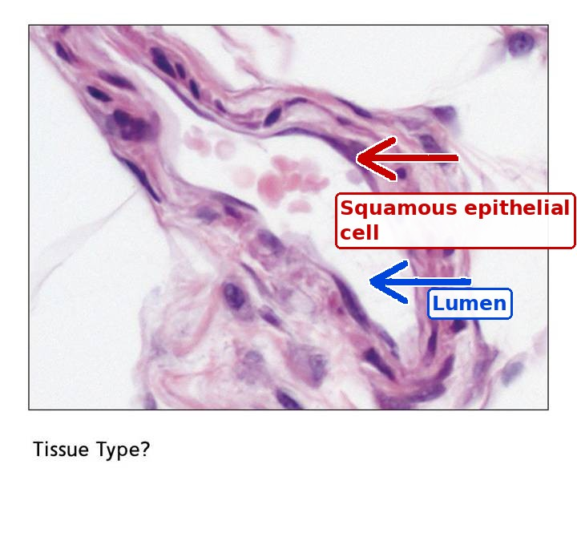
Labels: Squamous epithelial cell, Lumen
🧠 Epithelial shapesSQUASH · CUBE · COLUMNSquamous = squashed flat, cuboidal = cube, columnar = tall column.
🧠 Simple squamousFRIED EGGSFlat cells with a bump in the middle, one layer thin.
🧠 Empty white spacesWHITE HOLES = FAT OR LUMENEmpty-looking rings are fat cells (the fat washes out). A big white gap inside epithelium is the lumen.
🧠 Epithelium in 2 stepsCOUNT LAYERS → NAME THE SHAPEOne layer = simple, many = stratified (named by the TOP layer). One layer with nuclei at different heights = pseudostratified.
Lab homework · Ch 5 Pre-Lab (diagram)
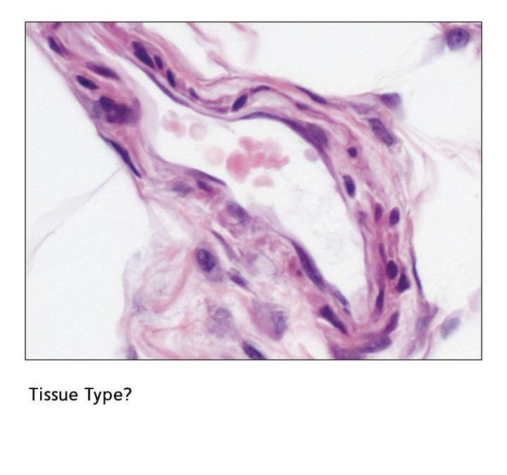
Labels: Simple squamous epithelium
🧠 Epithelial shapesSQUASH · CUBE · COLUMNSquamous = squashed flat, cuboidal = cube, columnar = tall column.
🧠 Simple vs stratifiedSIMPLE = SWAP · STRATIFIED = STRONGSimple = one layer, absorbs. Stratified = stacked, protects.
🧠 Simple squamousFRIED EGGSFlat cells with a bump in the middle, one layer thin.
🧠 Epithelium in 2 stepsCOUNT LAYERS → NAME THE SHAPEOne layer = simple, many = stratified (named by the TOP layer). One layer with nuclei at different heights = pseudostratified.
Lab homework · Ch 5 Pre-Lab (diagram)
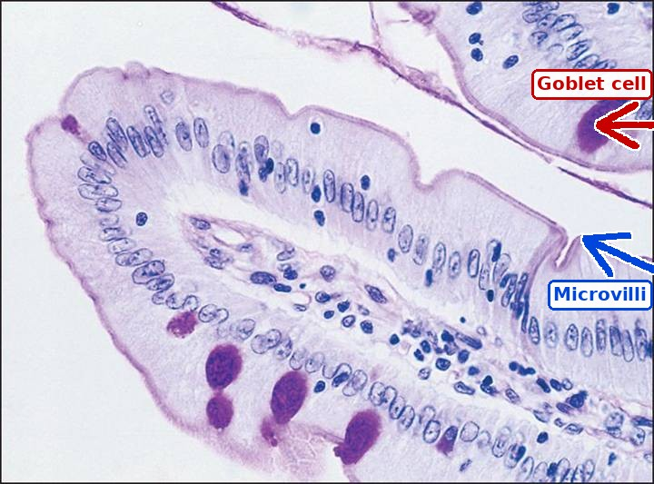
Labels: Goblet cell, Microvilli
🧠 Cilia vs microvilliCILIA CARRY · MICROVILLI MULTIPLYCilia move stuff along. Microvilli multiply surface area.
🧠 Goblet cellGOBLET = MUCUS CUPThe cup-shaped cell that makes mucus.
Lab homework · Ch 5 Pre-Lab (diagram)
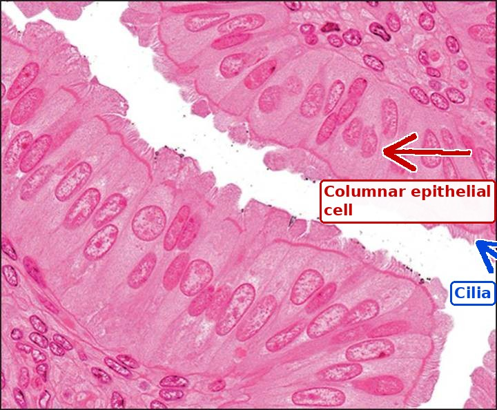
Labels: Columnar epithelial cell, Cilia
🧠 Epithelial shapesSQUASH · CUBE · COLUMNSquamous = squashed flat, cuboidal = cube, columnar = tall column.
🧠 Cilia vs microvilliCILIA CARRY · MICROVILLI MULTIPLYCilia move stuff along. Microvilli multiply surface area.
🧠 Simple columnarPICKET FENCETall cells with nuclei lined up near the bottom.
🧠 Epithelium in 2 stepsCOUNT LAYERS → NAME THE SHAPEOne layer = simple, many = stratified (named by the TOP layer). One layer with nuclei at different heights = pseudostratified.
Lab homework · Ch 5 Pre-Lab (diagram)
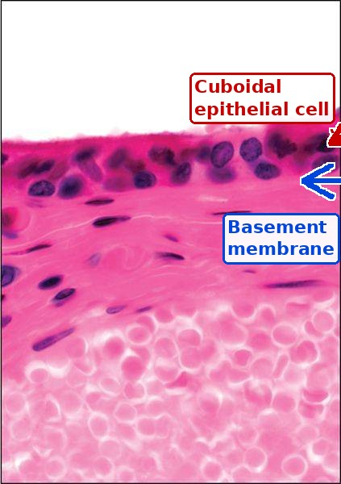
Labels: Cuboidal epithelial cell, Basement membrane
🧠 Epithelial shapesSQUASH · CUBE · COLUMNSquamous = squashed flat, cuboidal = cube, columnar = tall column.
🧠 Basement membraneBASEMENT = FLOORThe floor under epithelium, on the basal side.
🧠 Simple cuboidalROWS OF DICESquare cells with a round nucleus in the center, like kidney tubes.
🧠 Epithelium in 2 stepsCOUNT LAYERS → NAME THE SHAPEOne layer = simple, many = stratified (named by the TOP layer). One layer with nuclei at different heights = pseudostratified.
Lab homework · Ch 5 Pre-Lab (diagram)
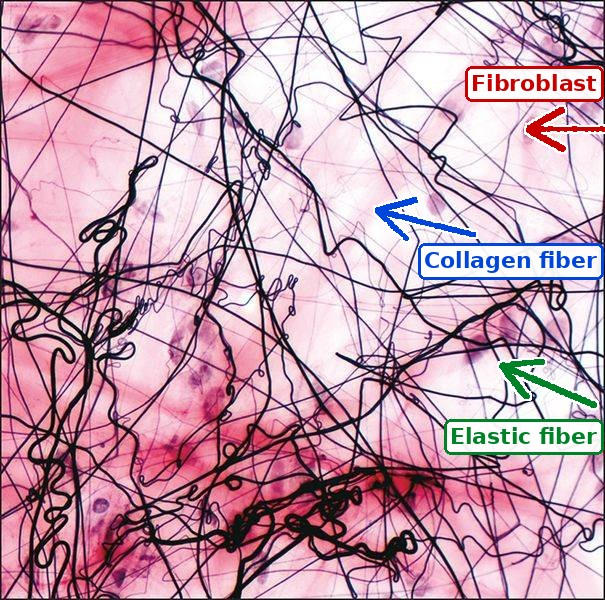
Labels: Fibroblast, Collagen fiber, Elastic fiber
🧠 Connective fibersCOLLAGEN = ROPE · ELASTIC = BAND · RETICULAR = NETStrength, stretch, mesh.
🧠 Pink vs purple (H&E)PINK = PROTEIN · PURPLE = NUCLEUSEosin stains cytoplasm, collagen, muscle and red blood cells pink. Hematoxylin stains the nucleus (DNA) blue-purple.
🧠 Pink thingsPINK = FIBERS · MUSCLE · RBCCollagen fibers, muscle cells and red blood cells all take the pink stain.
🧠 Black threadsBLACK THREADS = FIBER STAINWavy black threads are elastic fibers. A fine black net is reticular fibers.
Lab homework · Ch 5 Pre-Lab (diagram)
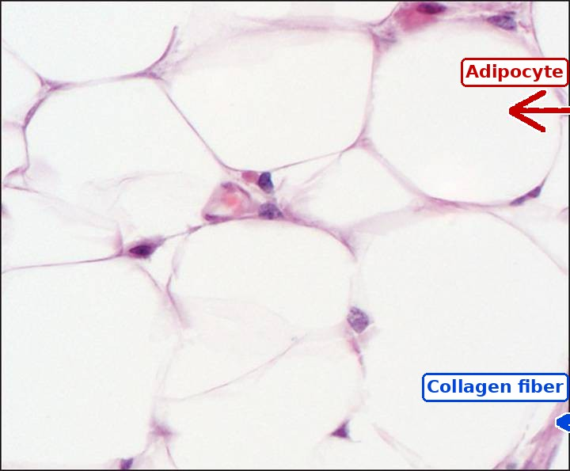
Labels: Adipocyte, Collagen fiber
🧠 Connective fibersCOLLAGEN = ROPE · ELASTIC = BAND · RETICULAR = NETStrength, stretch, mesh.
🧠 Fat cellADIPO = FATRing shape with the nucleus pushed to the side.
🧠 Pink thingsPINK = FIBERS · MUSCLE · RBCCollagen fibers, muscle cells and red blood cells all take the pink stain.
🧠 Empty white spacesWHITE HOLES = FAT OR LUMENEmpty-looking rings are fat cells (the fat washes out). A big white gap inside epithelium is the lumen.
Lab homework · Ch 5 Pre-Lab (diagram)
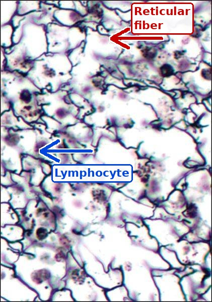
Labels: Reticular fiber, Lymphocyte
🧠 White blood cellsNLMEBNever Let Monkeys Eat Bananas: Neutrophil, Lymphocyte, Monocyte, Eosinophil, Basophil (most to least).
🧠 Connective fibersCOLLAGEN = ROPE · ELASTIC = BAND · RETICULAR = NETStrength, stretch, mesh.
🧠 Pink vs purple (H&E)PINK = PROTEIN · PURPLE = NUCLEUSEosin stains cytoplasm, collagen, muscle and red blood cells pink. Hematoxylin stains the nucleus (DNA) blue-purple.
🧠 Black threadsBLACK THREADS = FIBER STAINWavy black threads are elastic fibers. A fine black net is reticular fibers.
Lab homework · Ch 5 Pre-Lab (diagram)
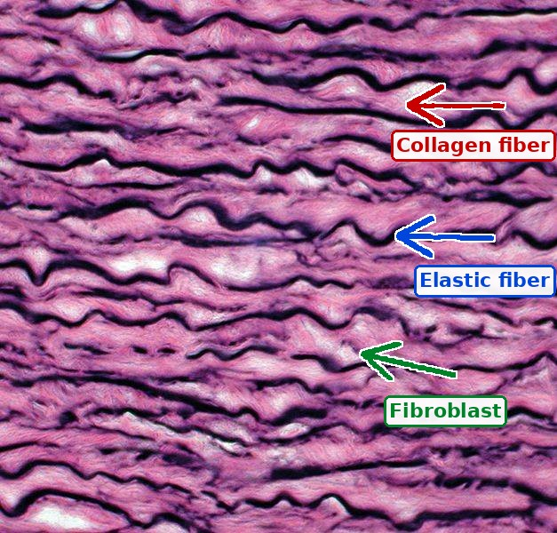
Labels: Collagen fiber, Elastic fiber, Fibroblast
🧠 Connective fibersCOLLAGEN = ROPE · ELASTIC = BAND · RETICULAR = NETStrength, stretch, mesh.
🧠 Pink vs purple (H&E)PINK = PROTEIN · PURPLE = NUCLEUSEosin stains cytoplasm, collagen, muscle and red blood cells pink. Hematoxylin stains the nucleus (DNA) blue-purple.
🧠 Pink thingsPINK = FIBERS · MUSCLE · RBCCollagen fibers, muscle cells and red blood cells all take the pink stain.
🧠 Black threadsBLACK THREADS = FIBER STAINWavy black threads are elastic fibers. A fine black net is reticular fibers.
Lab homework · Ch 5 Pre-Lab (diagram)
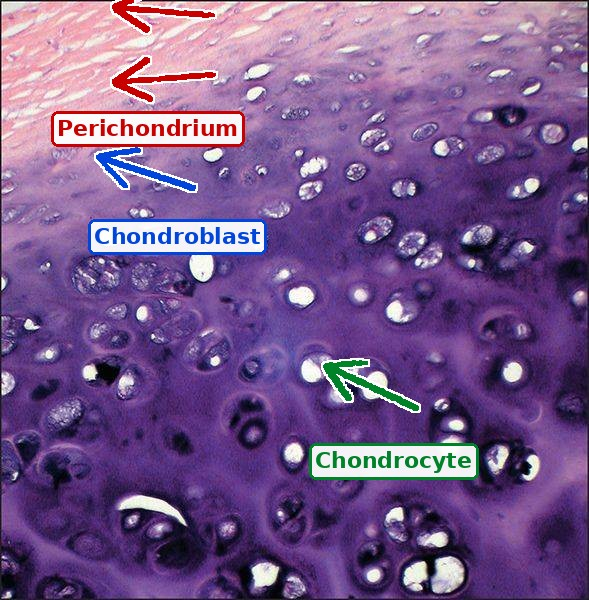
Labels: Perichondrium, Chondroblast, Chondrocyte
🧠 Cartilage cellsBLAST BUILDS · CYTE SITS · PERI = AROUNDChondroblast builds, chondrocyte lives in a lacuna, perichondrium wraps around.
🧠 Purple-blue matrixPURPLE-BLUE JELLY = CARTILAGECartilage matrix loves hematoxylin, so it looks purple-blue with chondrocytes in white holes (lacunae).
🧠 Cartilage in 3 looksGLASSY = HYALINE · THREADS = ELASTIC · THICK ROWS = FIBROAll have chondrocytes sitting in lacunae.
Lab homework · Ch 5 Pre-Lab (diagram)
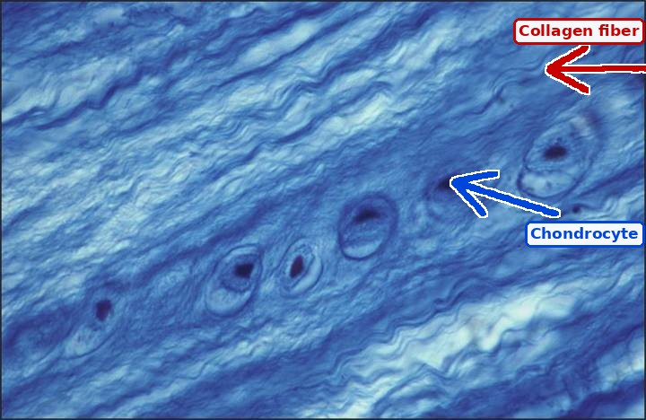
Labels: Collagen fiber, Chondrocyte
🧠 Cartilage cellsBLAST BUILDS · CYTE SITS · PERI = AROUNDChondroblast builds, chondrocyte lives in a lacuna, perichondrium wraps around.
🧠 Connective fibersCOLLAGEN = ROPE · ELASTIC = BAND · RETICULAR = NETStrength, stretch, mesh.
🧠 Pink thingsPINK = FIBERS · MUSCLE · RBCCollagen fibers, muscle cells and red blood cells all take the pink stain.
🧠 Purple-blue matrixPURPLE-BLUE JELLY = CARTILAGECartilage matrix loves hematoxylin, so it looks purple-blue with chondrocytes in white holes (lacunae).
Lab homework · Ch 5 Pre-Lab (diagram)
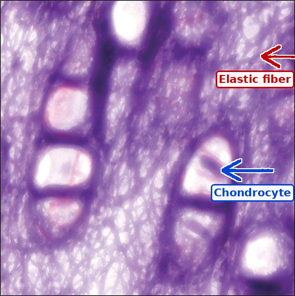
Labels: Elastic fiber, Chondrocyte
🧠 Cartilage cellsBLAST BUILDS · CYTE SITS · PERI = AROUNDChondroblast builds, chondrocyte lives in a lacuna, perichondrium wraps around.
🧠 Connective fibersCOLLAGEN = ROPE · ELASTIC = BAND · RETICULAR = NETStrength, stretch, mesh.
🧠 Purple-blue matrixPURPLE-BLUE JELLY = CARTILAGECartilage matrix loves hematoxylin, so it looks purple-blue with chondrocytes in white holes (lacunae).
🧠 Black threadsBLACK THREADS = FIBER STAINWavy black threads are elastic fibers. A fine black net is reticular fibers.
Lab homework · Ch 5 Pre-Lab (diagram)
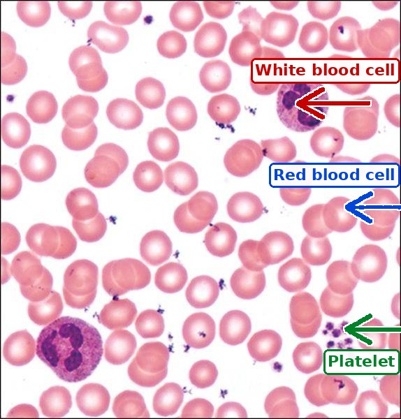
Labels: White blood cell, Red blood cell, Platelet
🧠 White blood cellsNLMEBNever Let Monkeys Eat Bananas: Neutrophil, Lymphocyte, Monocyte, Eosinophil, Basophil (most to least).
🧠 Blood smearRBC = DONUT · WBC = PURPLE NUCLEUS · PLATELET = SPECKSRed cells have no nucleus.
🧠 Pink vs purple (H&E)PINK = PROTEIN · PURPLE = NUCLEUSEosin stains cytoplasm, collagen, muscle and red blood cells pink. Hematoxylin stains the nucleus (DNA) blue-purple.
Lab homework · Ch 5 Pre-Lab (diagram)
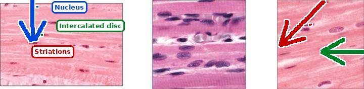
Labels: Striations, Nucleus, Intercalated disc
🧠 Muscle stripesSTRIATED = SKELETAL + HEARTIntercalated discs are heart only.
🧠 Skeletal vs cardiacSKELETAL = STRIPES + MANY NUCLEI · CARDIAC = STRIPES + BRANCHES + DISCSSmooth has no stripes and one nucleus per cell.
🧠 Pink vs purple (H&E)PINK = PROTEIN · PURPLE = NUCLEUSEosin stains cytoplasm, collagen, muscle and red blood cells pink. Hematoxylin stains the nucleus (DNA) blue-purple.
🧠 Pink thingsPINK = FIBERS · MUSCLE · RBCCollagen fibers, muscle cells and red blood cells all take the pink stain.
Lab homework · Ch 5 Pre-Lab (diagram)
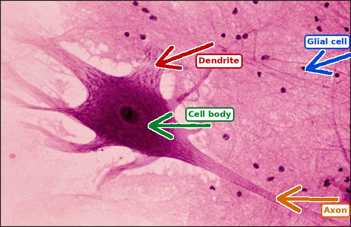
Labels: Dendrite, Glial cell, Cell body, Axon
🧠 Neuron partsDENDRITE DRIVES IN · AXON AWAYDendrites receive, axon sends.
🧠 NeuronNEURON = STAR WITH A LONG TAILCell body with dendrites, one long axon.
🧠 Nervous tissueBIG PURPLE STAR = NEURONThe neuron cell body is large and dark with branching processes. The small dots around it are glial cells.
Lab homework · Ch 5 Post-Lab (diagram)
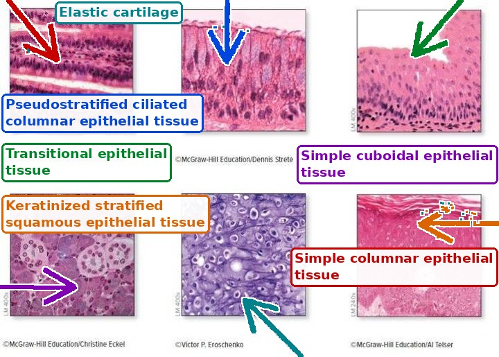
Labels: Simple columnar epithelial tissue, Pseudostratified ciliated columnar epithelial tissue, Transitional epithelial tissue, Keratinized stratified squamous epithelial tissue, Simple cuboidal epithelial tissue, Elastic cartilage
🧠 Epithelial shapesSQUASH · CUBE · COLUMNSquamous = squashed flat, cuboidal = cube, columnar = tall column.
🧠 Simple vs stratifiedSIMPLE = SWAP · STRATIFIED = STRONGSimple = one layer, absorbs. Stratified = stacked, protects.
🧠 Cilia vs microvilliCILIA CARRY · MICROVILLI MULTIPLYCilia move stuff along. Microvilli multiply surface area.
🧠 Cartilage cellsBLAST BUILDS · CYTE SITS · PERI = AROUNDChondroblast builds, chondrocyte lives in a lacuna, perichondrium wraps around.
Skin layers & nail
Lab homework · Ch 6 Pre-Lab (diagram)
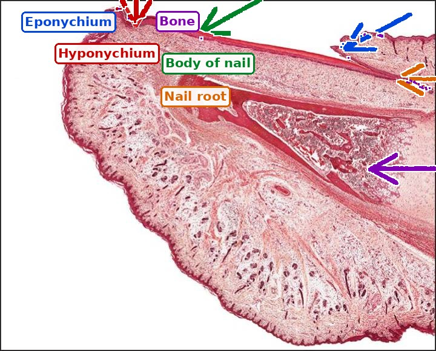
Labels: Hyponychium, Eponychium, Body of nail, Nail root, Bone
🧠 Nail partsEPI = ON TOP · HYPO = UNDEREponychium is the cuticle. Hyponychium is under the free edge.
Lab homework · Ch 6 Pre-Lab (diagram)
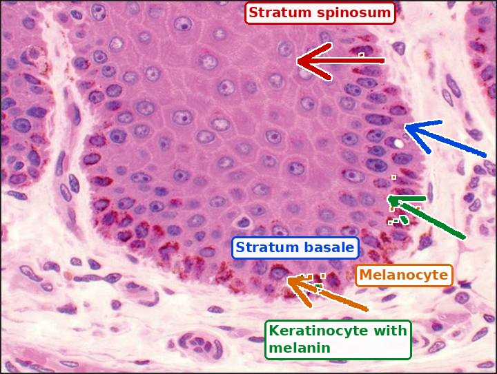
Labels: Stratum spinosum, Stratum basale, Keratinocyte with melanin, Melanocyte
🧠 Epidermis layersCLGSBCome, Let's Get Sun Burned: Corneum, Lucidum, Granulosum, Spinosum, Basale (top to bottom). Lucidum only in thick skin.
🧠 MelanocyteMELANocyte makes MELANinPigment umbrella over the nucleus against UV.
Bone & bone tissue (homework figures)
Lab homework · Ch 7 Post-Lab (diagram)
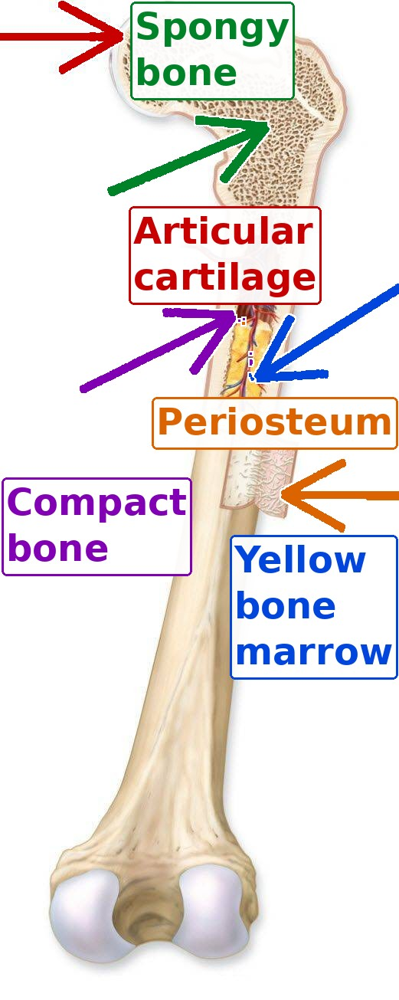
Labels: Articular cartilage, Yellow bone marrow, Spongy bone, Periosteum, Compact bone
🧠 Compact vs spongyCOMPACT = SHELL · SPONGY = HOLESCompact has osteons, spongy has trabeculae and red marrow.
🧠 PeriosteumPERI = AROUNDOuter covering, where tendons attach.
🧠 MarrowYELLOW = FAT · RED = RBCsAdult medullary cavity holds yellow marrow.
🧠 Articular cartilageARTICULAR = JOINT CAPGlassy hyaline cartilage on the epiphysis.
Lab homework · Ch 7 Post-Lab (diagram)
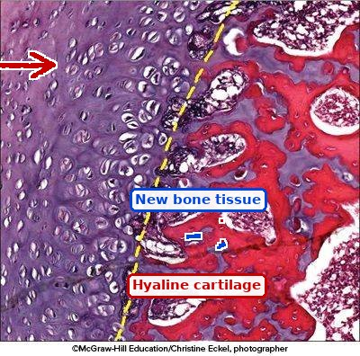
Labels: Hyaline cartilage, New bone tissue
🧠 Articular cartilageARTICULAR = JOINT CAPGlassy hyaline cartilage on the epiphysis.
🧠 How bones formINTRA = FLAT SKULL · ENDO = LONGIntramembranous makes flat skull bones. Endochondral makes long bones from cartilage.
🧠 Hyaline cartilageGLASSY + COINS IN HOLESSmooth glassy matrix with chondrocytes sitting in lacunae.
🧠 Bone tissueTREE RINGSRings of lamellae around a central canal: osteons.
Lab homework · Ch 7 Post-Lab (diagram)
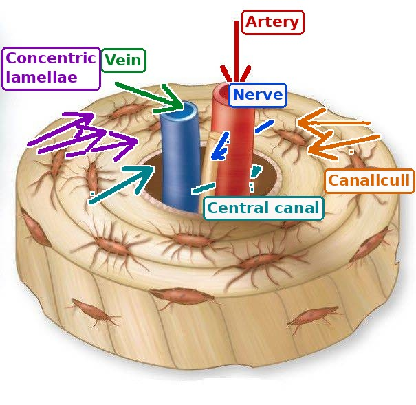
Labels: Artery, Nerve, Vein, Canaliculi, Concentric lamellae, Central canal
🧠 OsteonBULL'S-EYE: CANAL · LAMELLAE · LACUNAECentral canal in the middle, lamellae = rings, lacunae = lakes with osteocytes, canaliculi = tiny canals.
Lab homework · Ch 7 Post-Lab (diagram)
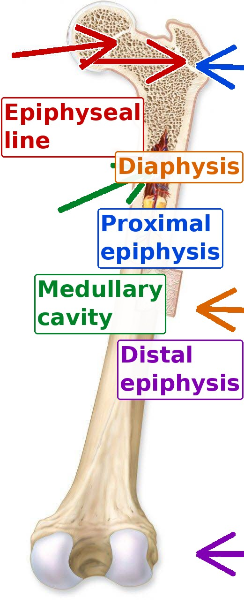
Labels: Epiphyseal line, Proximal epiphysis, Medullary cavity, Diaphysis, Distal epiphysis
🧠 Epiphysis vs diaphysisDIA = DIAMETER (shaft) · EPI = ENDSYour weak spot. The shaft is the diaphysis, the ends are epiphyses.
🧠 MarrowYELLOW = FAT · RED = RBCsAdult medullary cavity holds yellow marrow.
🧠 Plate vs linePLATE = KID · LINE = ADULTThe plate is growing, the line is the scar after it closes.
🧠 Growth plate zonesRPHCOReal Pizza Has Cheesy Olives: Resting, Proliferating, Hypertrophic, Calcified, Ossification.
Lab homework · Ch 7 Post-Lab (diagram)
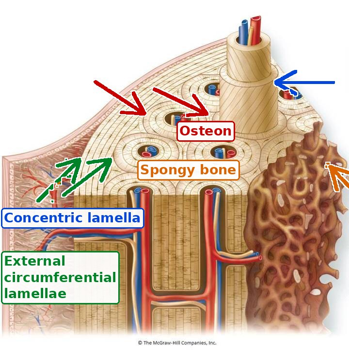
Labels: Osteon, Concentric lamella, External circumferential lamellae, Spongy bone
🧠 Compact vs spongyCOMPACT = SHELL · SPONGY = HOLESCompact has osteons, spongy has trabeculae and red marrow.
🧠 OsteonBULL'S-EYE: CANAL · LAMELLAE · LACUNAECentral canal in the middle, lamellae = rings, lacunae = lakes with osteocytes, canaliculi = tiny canals.
Scapula (homework figure)
Lab homework · Ch 9 Post-Lab (diagram)
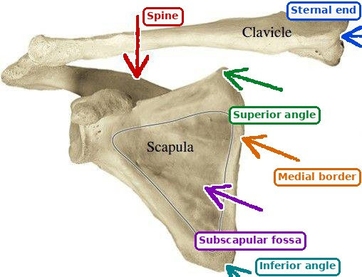
Labels: Spine, Sternal end, Superior angle, Medial border, Subscapular fossa, Inferior angle
🧠 ScapulaACRO = TIP · CORACOID = BEAK · GLENOID = SOCKETAcromion is the shoulder tip, glenoid cavity holds the humerus head.
🧠 Clavicle endsSTERNal → STERNum · ACROMial → ACROMionEach end of the clavicle names what it meets.
Lab homework · Ch 9 Post-Lab (diagram)
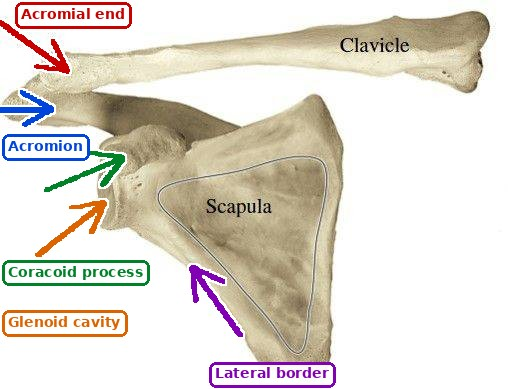
Labels: Acromial end, Acromion, Coracoid process, Glenoid cavity, Lateral border
🧠 ScapulaACRO = TIP · CORACOID = BEAK · GLENOID = SOCKETAcromion is the shoulder tip, glenoid cavity holds the humerus head.
🧠 Clavicle endsSTERNal → STERNum · ACROMial → ACROMionEach end of the clavicle names what it meets.
Body regions, cavities & membranes
Lab homework · Ch 2 Pre-Lab (diagram)
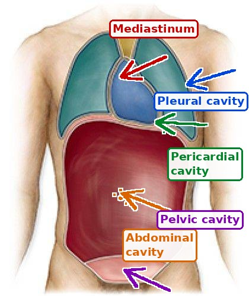
Labels: Mediastinum, Pleural cavity, Pericardial cavity, Abdominal cavity, Pelvic cavity
🧠 CavitiesCRANIAL = BRAIN · VERTEBRAL = CORD · PLEURAL = LUNGS · PERICARDIAL = HEARTMediastinum = the middle of the chest between the lungs.
Lab homework · Ch 2 Pre-Lab (diagram)
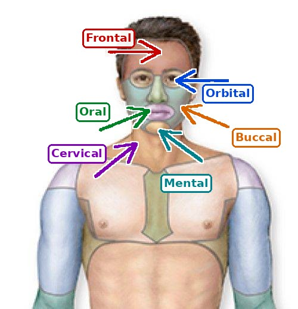
Labels: Frontal, Orbital, Oral, Buccal, Cervical, Mental
🧠 Head and neck regionsFOOBCMFrontal = forehead, Orbital = eye, Oral = mouth, Buccal = cheek, Cervical = neck, Mental = chin.
Lab homework · Ch 2 Pre-Lab (diagram)
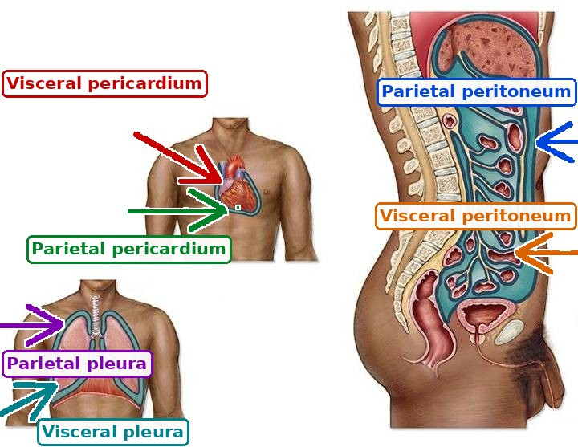
Labels: Visceral pericardium, Parietal peritoneum, Parietal pericardium, Visceral peritoneum, Parietal pleura, Visceral pleura
🧠 Serous membranesVISCERAL = ORGAN · PARIETAL = WALLVisceral hugs the organ, parietal lines the cavity wall.
Lab homework · Ch 2 Pre-Lab (diagram)
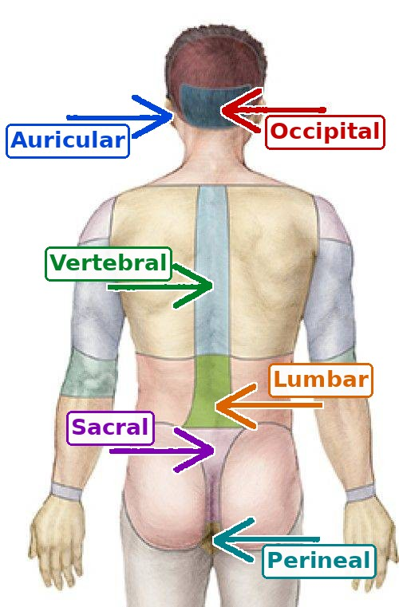
Labels: Occipital, Auricular, Vertebral, Lumbar, Sacral, Perineal
🧠 Sacrum landmarksALA = WING · PROMONTORY = CLIFF · HIATUS = GAPMedian sacral crest is the bumpy ridge down the back.
🧠 Back regionsOCCIPITAL = BACK OF HEAD · VERTEBRAL = SPINE · LUMBAR = LOW BACK · SACRAL = BASEAuricular = ear. Perineal = between the legs.
Lab homework · Ch 2 Pre-Lab (diagram)
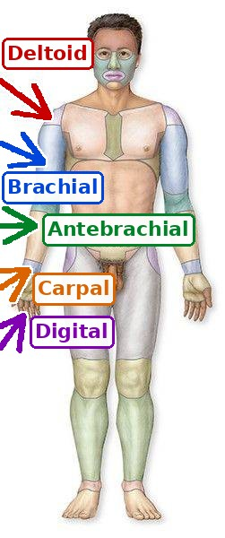
Labels: Deltoid, Brachial, Antebrachial, Carpal, Digital
🧠 Arm regionsDBACDDeltoid (shoulder), Brachial (upper arm), Antebrachial (forearm), Carpal (wrist), Digital (fingers).
Lab homework · Ch 2 Pre-Lab (diagram)
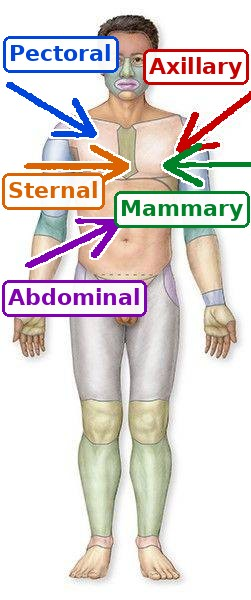
Labels: Axillary, Pectoral, Mammary, Sternal, Abdominal
🧠 Front of trunkARMPIT → PEC → BREAST → STERNUM → BELLYAxillary, Pectoral, Mammary, Sternal, Abdominal.
Lab homework · Ch 2 Pre-Lab (diagram)
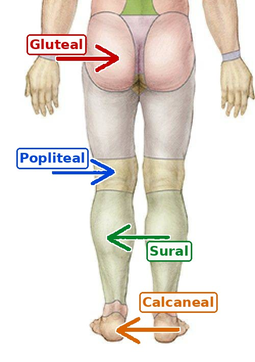
Labels: Gluteal, Popliteal, Sural, Calcaneal
🧠 Leg regionsGLUTEAL = BUTT · POPLITEAL = BACK OF KNEE · SURAL = CALF · CALCANEAL = HEELYour weak spots: sural is the calf, calcaneal is the heel.
Lab homework · Ch 2 Pre-Lab (diagram)
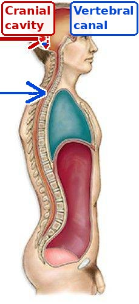
Labels: Cranial cavity, Vertebral canal
🧠 CavitiesCRANIAL = BRAIN · VERTEBRAL = CORD · PLEURAL = LUNGS · PERICARDIAL = HEARTMediastinum = the middle of the chest between the lungs.
Lab homework · Ch 2 Pre-Lab (diagram)
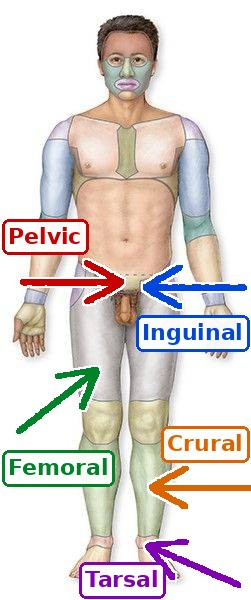
Labels: Pelvic, Inguinal, Femoral, Crural, Tarsal
🧠 Tarsals (ankle)TCN-MILCTiger Cubs Need MILC: Talus, Calcaneus, Navicular, Medial / Intermediate / Lateral cuneiform, Cuboid.
🧠 Front of leg and groinINGUINAL = GROIN · FEMORAL = THIGH · CRURAL = SHIN · TARSAL = ANKLEPelvic is the hip area.
Microscope: labeled diagram (CC0)
Compound microscope (diagram: Thebiologyprimer, CC0, Wikimedia Commons)
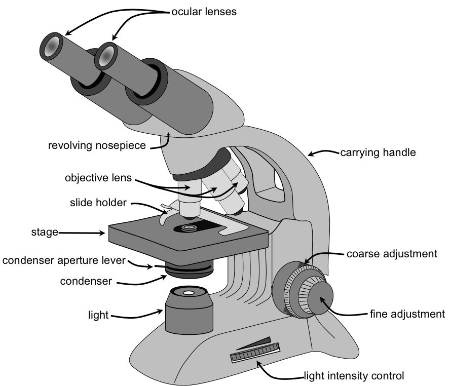
Labels: Ocular lenses, Revolving nosepiece, Carrying handle, Objective lens, Slide holder, Stage, Condenser aperture lever, Condenser, Light, Coarse adjustment, Fine adjustment, Light intensity control
🧠 Light path, bottom to topLazy Cats Sleep On OttomansLight, Condenser, Stage, Objective lens, Ocular lenses
🧠 Parts, top to bottomOld Rabbits Often Sip Cold LemonadeOcular lenses, Revolving nosepiece, Objective lens, Stage, Condenser, Light
🧠 Knobs and controlsCats Find LasersCoarse adjustment, Fine adjustment, Light intensity control
🧠 Light pathL-C-S-O-ELight source, Condenser, Stage (slide), Objective, Eyepiece: follow the light up.
🧠 Coarse vs fine focusCOARSE = BIG, LOW POWER ONLY · FINE = FINAL TOUCHStart with coarse on scanning power, then fine to sharpen. Fine moves the stage in small increments.
🧠 Arm, base, headARM = CARRY · BASE = SUPPORTCarry with two hands: one on the arm, one under the base. The head holds the lenses.
🧠 Eyepiece and diopterEYEPIECE = OCULAR = EYE · DIOPTER = YOUR EYESThe diopter ring corrects the difference between your two eyes.
Microscope parts (homework photos)
Lab homework · Ch 3 Pre-Lab (diagram)
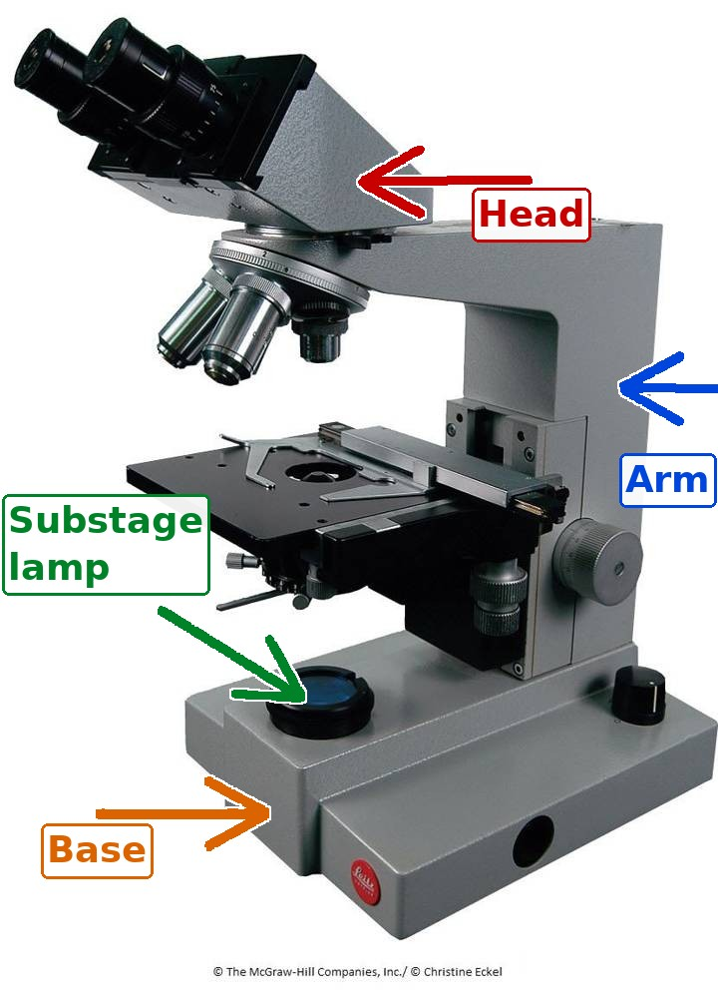
Labels: Head, Arm, Substage lamp, Base
🧠 Light pathL-C-S-O-ELight source, Condenser, Stage (slide), Objective, Eyepiece: follow the light up.
🧠 Arm, base, headARM = CARRY · BASE = SUPPORTCarry with two hands: one on the arm, one under the base. The head holds the lenses.
🧠 StageSTAGE = SLIDE PLATFORM · MECHANICAL = KNOBS MOVE ITMechanical stage controls slide the specimen side to side and front to back.
Lab homework · Ch 3 Pre-Lab (diagram)
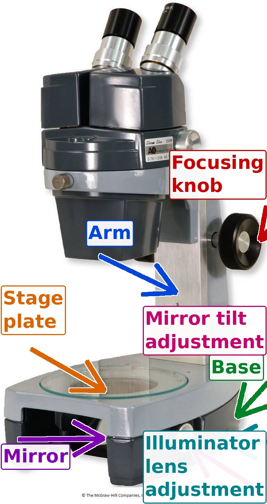
Labels: Focusing knob, Arm, Base, Stage plate, Mirror, Illuminator lens adjustment, Mirror tilt adjustment
🧠 Light pathL-C-S-O-ELight source, Condenser, Stage (slide), Objective, Eyepiece: follow the light up.
🧠 Coarse vs fine focusCOARSE = BIG, LOW POWER ONLY · FINE = FINAL TOUCHStart with coarse on scanning power, then fine to sharpen. Fine moves the stage in small increments.
🧠 Arm, base, headARM = CARRY · BASE = SUPPORTCarry with two hands: one on the arm, one under the base. The head holds the lenses.
🧠 StageSTAGE = SLIDE PLATFORM · MECHANICAL = KNOBS MOVE ITMechanical stage controls slide the specimen side to side and front to back.
Lab homework · Ch 3 Pre-Lab (diagram)
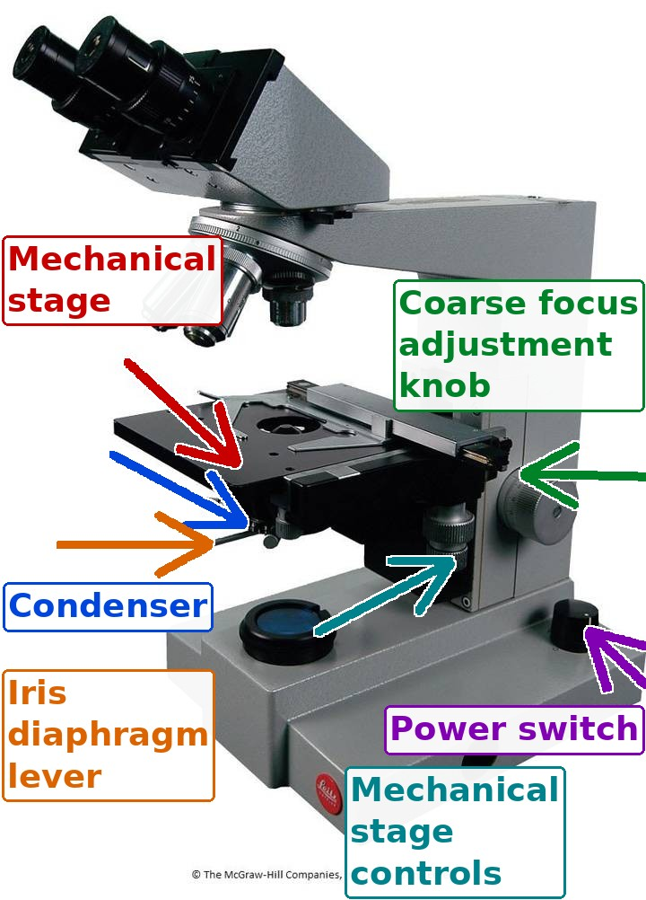
Labels: Mechanical stage, Condenser, Coarse focus adjustment knob, Iris diaphragm lever, Power switch, Mechanical stage controls
🧠 Light pathL-C-S-O-ELight source, Condenser, Stage (slide), Objective, Eyepiece: follow the light up.
🧠 Coarse vs fine focusCOARSE = BIG, LOW POWER ONLY · FINE = FINAL TOUCHStart with coarse on scanning power, then fine to sharpen. Fine moves the stage in small increments.
🧠 Condenser and irisCONDENSER = FOCUSES LIGHT · IRIS = AMOUNTThe iris diaphragm works like the iris of your eye: it opens and closes.
🧠 StageSTAGE = SLIDE PLATFORM · MECHANICAL = KNOBS MOVE ITMechanical stage controls slide the specimen side to side and front to back.
Lab homework · Ch 3 Pre-Lab (diagram)
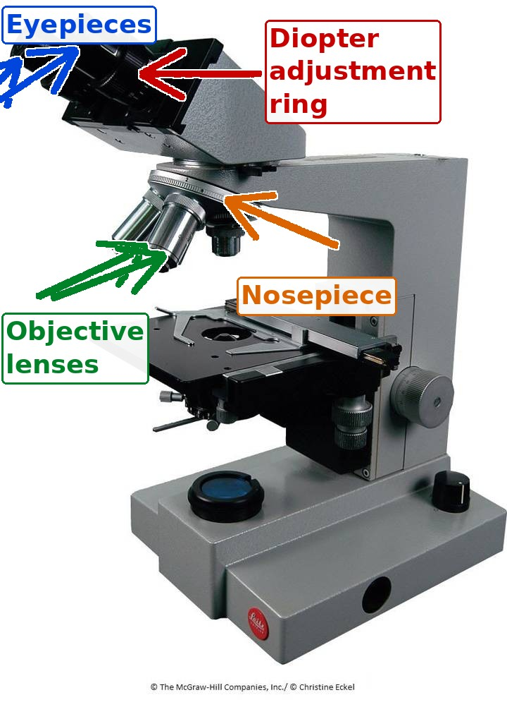
Labels: Diopter adjustment ring, Eyepieces, Objective lenses, Nosepiece
🧠 Eyepiece and diopterEYEPIECE = OCULAR = EYE · DIOPTER = YOUR EYESThe diopter ring corrects the difference between your two eyes.
🧠 Nosepiece and objectivesNOSEPIECE SPINS · OBJECTIVES = OBJECT SIDEThe nosepiece is the turret that rotates the objective lenses over the slide.
🧠 Total magnificationTOTAL = OCULAR × OBJECTIVE10× eyepiece with 40× objective = 400×.
Lab homework · Ch 3 Pre-Lab (diagram)
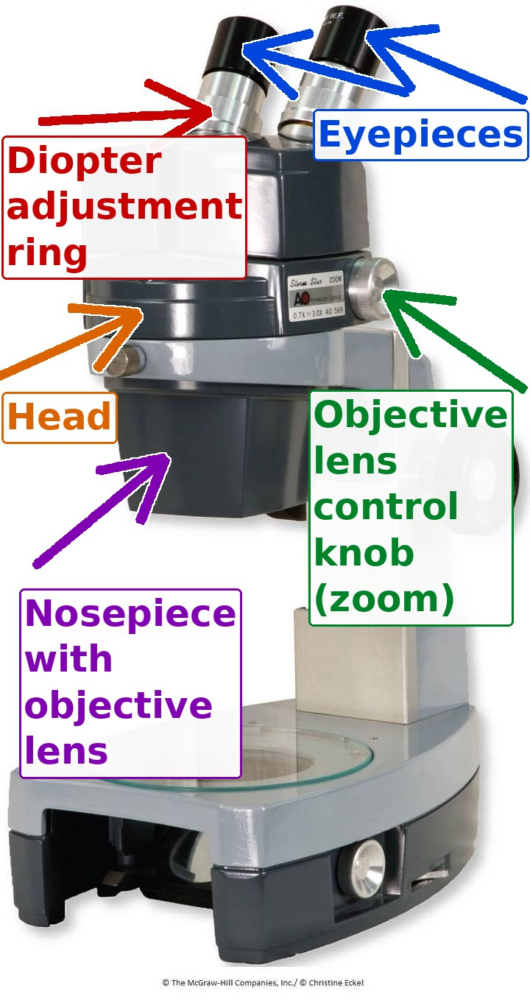
Labels: Diopter adjustment ring, Eyepieces, Objective lens control knob (zoom), Head, Nosepiece with objective lens
🧠 Arm, base, headARM = CARRY · BASE = SUPPORTCarry with two hands: one on the arm, one under the base. The head holds the lenses.
🧠 Eyepiece and diopterEYEPIECE = OCULAR = EYE · DIOPTER = YOUR EYESThe diopter ring corrects the difference between your two eyes.
🧠 Nosepiece and objectivesNOSEPIECE SPINS · OBJECTIVES = OBJECT SIDEThe nosepiece is the turret that rotates the objective lenses over the slide.
🧠 Total magnificationTOTAL = OCULAR × OBJECTIVE10× eyepiece with 40× objective = 400×.
Lab homework · Ch 3 Post-Lab (diagram)
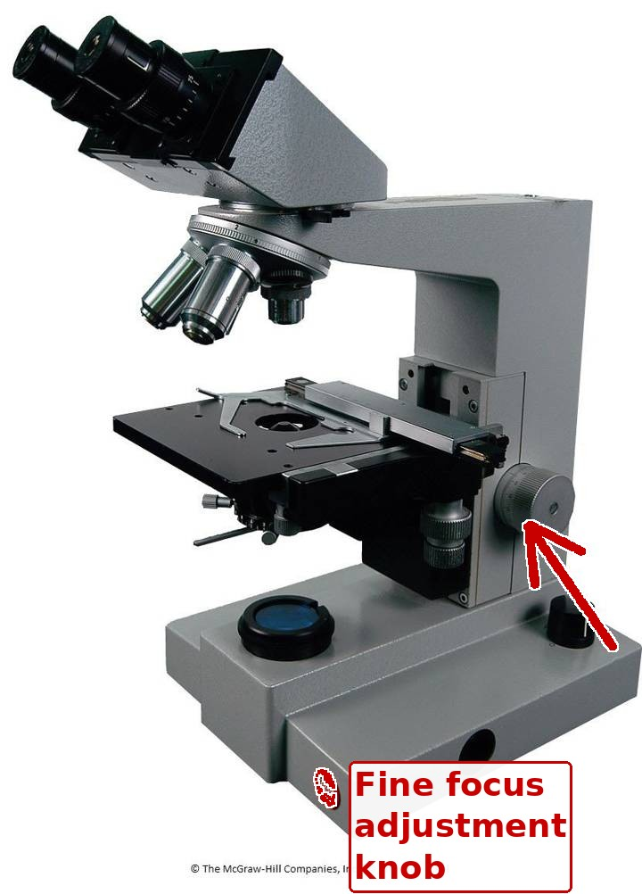
Labels: Fine focus adjustment knob
🧠 Coarse vs fine focusCOARSE = BIG, LOW POWER ONLY · FINE = FINAL TOUCHStart with coarse on scanning power, then fine to sharpen. Fine moves the stage in small increments.
Lab homework · Ch 3 Post-Lab (diagram)
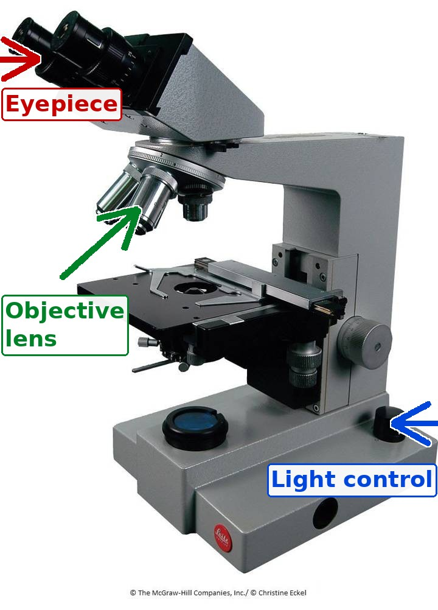
Labels: Eyepiece, Light control, Objective lens
🧠 Light pathL-C-S-O-ELight source, Condenser, Stage (slide), Objective, Eyepiece: follow the light up.
🧠 Eyepiece and diopterEYEPIECE = OCULAR = EYE · DIOPTER = YOUR EYESThe diopter ring corrects the difference between your two eyes.
🧠 Nosepiece and objectivesNOSEPIECE SPINS · OBJECTIVES = OBJECT SIDEThe nosepiece is the turret that rotates the objective lenses over the slide.
🧠 Total magnificationTOTAL = OCULAR × OBJECTIVE10× eyepiece with 40× objective = 400×.
Cell organelles
Lab homework · Ch 4 Post-Lab (diagram)
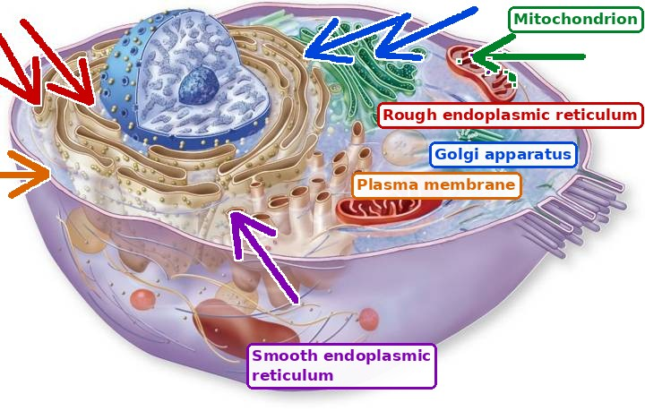
Labels: Rough endoplasmic reticulum, Golgi apparatus, Mitochondrion, Plasma membrane, Smooth endoplasmic reticulum
🧠 Around the picture: left, top, right, bottom, edgeReally Great Mangoes Sweeten PiesRough endoplasmic reticulum, Golgi apparatus, Mitochondrion, Smooth endoplasmic reticulum, Plasma membrane
🧠 PowerhouseMITOCHONDRION = POWERHOUSE (ATP)Makes energy for the cell.
🧠 Rough vs smooth ERROUGH = RIBOSOMES = PROTEIN · SMOOTH = LIPIDSRough ER is studded with ribosomes.
🧠 GolgiGOLGI = POST OFFICEPackages, labels and ships proteins.
🧠 Plasma membranePLASMA MEMBRANE = GATEKEEPERSelectively permeable barrier.
Lab homework · Ch 4 Post-Lab (diagram)
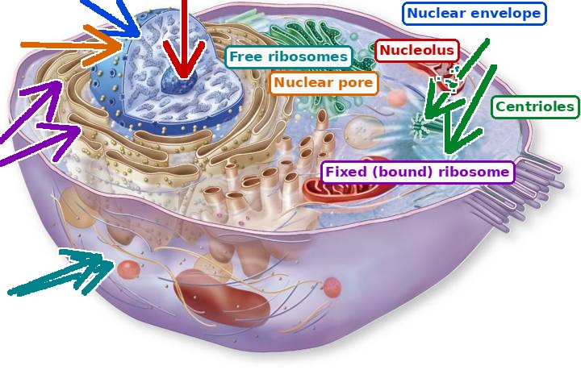
Labels: Nucleolus, Nuclear envelope, Centrioles, Nuclear pore, Fixed (bound) ribosome, Free ribosomes
🧠 Nucleus out to the cytoplasmNine Nasty Nuts Fell From CarsNucleolus, Nuclear envelope, Nuclear pore, Fixed (bound) ribosome, Free ribosomes, Centrioles
🧠 Nucleus partsNUCLEOLUS = RIBOSOME FACTORY · PORES = DOORSThe nuclear envelope is a double wall with pores.
🧠 RibosomesFREE = STAYS IN · BOUND = SHIPS OUTFree ribosomes make proteins for use inside the cell, bound ones (on the RER) make proteins for export.
🧠 CentriolesCENTRIOLES = SPINDLE MAKERSPaired organelles that organize the mitotic spindle.
🧠 Colors in the cell drawingBLUE = NUCLEUS · GREEN = GOLGI · RED = MITOCHONDRIA · TAN = ERIn your homework drawing: tan folds with gold dots are rough ER, tan pipes are smooth ER.